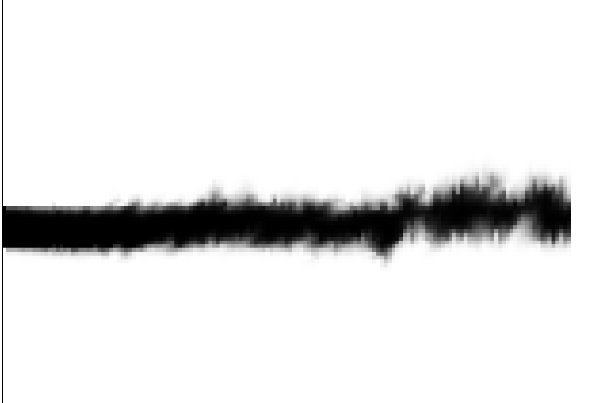
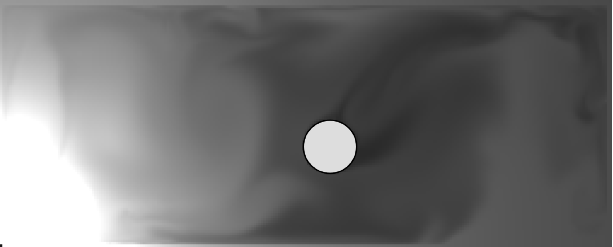

In this project, we started by using Mattias Müller’s Eulerian fluid simulator as base code. We built upon this fluid simulator to include other physical properties in order to create a more dynamic, realistic, and visually interesting simulation. Mattis Müller’s Eulerian fluid simulator models the fluid as incompressible and inviscid. We added to this by implementing vorticity to create a more realistic smoke simulation. We also implemented the interaction of heat within the scene to model the effects of buoyancy due to variations in temperature. Alongside these physics-based implementations, to create a more fun and practical simulation that can be applied to 2D games, we modeled some of the smoke effects seen in the 2D mobile game Boom Beach. Finally, we wrote various shaders to create visually appealing smoke effects.
We initially started with Mattis Müller’s Eulerian fluid simulator which models the fluid as a velocity field on a grid. The velocities are stored in a staggered grid manner which means that the horizontal forces are stored along the vertically standing sides of the walls and the vertical forces are stored along the horizontally standing sides of the walls.
The general simulation starts off with updating the velocity of each cell with outward forces which in his simulation is just gravity. Then Mattis Müller forces incompressibility by forcing the divergence to be 0 by adding and subtracting scalars accordingly, taking into account walls and obstacles through the Guass-Seidel method.
The simulation also uses overrelaxation which multiplies the divergence by a scaling factor, which in this
case is o = 1.9. Then the simulation performs semi-lagrangian advection. Generally, this is done
by advecting the density values stored in each cell. These steps are done at each time step.
For more information about the base Eulerian Fluid Simulator we used from Mattis Müller,
refer to the references. Note: When referring to the ’mass’ of smoke, we are referring to what
can be thought of as the amount of smoke in a cell and is related to the density in each cell.
We then build upon this fluid simulator by implementing Vorticity Confinement, Heat, and Buoyancy.
These make the fluid simulator more physically realistic and create a more visually appealing smoke.
Then we implement smoke grenades and flare grenades from the game, Boom Beach. We also
implemented various shaders that impact the appearance of the smoke. This section details the technical
approach to each of these additions to the source code.
In semi-lagrangian advection, we assume that our parcels of fluid travel in a straight path in between each of our timesteps. However, this introduces viscosity in our non-viscous fluid, resulting in an uninteresting laminar-like flow. To combat this, the method of vorticity confinement was initially invented by Steinhoff to model aerial vortices in flights. Modern-day research has further developed upon this method to include a hybrid technique that captures the strengths of both Lagrangian vortex particle methods as well as Eulerian grid-based methods. In our project, we add upon Müller’s fluid simulator to include vorticity confinement to generate a more life-like smoke with more swirls.
Navier-Stokes assumes incompressiblility in a fluid, and says
Taking the curl of our first equation here, we can generate a vorticity version of it in the form of
In this function, we define the helper functions that we will later use for our vorticity confinement method. We have our norm(arr) function that returns the l-2 norm of a given array, dot(arr1, arr2) function that returns the dot product of two inputted arrays, and cross(arr1, arr2) function that returns the magnitude of the cross product of two inputted arrays.
norm(arr) { //l-2 norm of array/vectorÂ
    var sum = 0;Â
    for (var i = 0; i < arr.length; i++) {Â
        sum += Math.pow(arr[i], 2);Â
    }Â
    return Math.sqrt(sum);Â
}Â
Â
dot(arr1, arr2) { //dot product of two vectorsÂ
    var out = 0;Â
    for (var i = 0; i < arr1.length; i++) {Â
        out += arr1[i] * arr2[i];Â
    }Â
    return out;Â
}Â
Â
cross(arr1, arr2) { //magnitude of cross product of two vectorsÂ
    return this.norm(arr1) * this.norm(arr2) * Math.sin(Math.acos(this.dot(arr1, arr2) / (this.norm(arr1) * this.norm(arr2))));Â
}
The cross product uses the equation
where α is defined as the angle between our two vectors. To find alpha, we use the equation
which can be seen to be true through the projection equation.
Our last helper function is curl(x, y, direction = 1), which calculates the curl at any given location (x,y). Since our fluid’s velocity vectors are dependent on many different factors, it is rather difficult and potentially computationally expensive to calculate our curl as specifically ω = ∇×u and then calculate the gradient of it. Thus, we instead take our curl to be the physical velocity in rotation around it. More specifically, for a location (x,y), we calculate it as the sums
These equations offer the curl for the standard notation of counterclockwise rotation about (x,y), and if interested, we can instead change our direction variable away from the default value of 1 to exhibit curl for clockwise rotation.
At a high level, at each point in our grid, we’re looking to first generate the vorticity as ω = ∇×u. Then, we calculate the vorticity location vector that point from lower to higher vorticity concentrations, η = ∇|ω|, and normalize it to get N = . Finally, we generate our force vector for that grid point as f = 𝜖h(N ×ω), where 𜖠is our constant to control the degree of effect, and h is the size of the grid. Written out, we have
To implement vorticity confinement, we first generate the curls at each point on our grid at the current timestep by calling our curl helper function. We store these in our array of size height ∗width (same size as arrays for our velocity values). Next, we generate the gradients by taking the absolute value of the difference between the current timestep and previous timestep’s curl values and divide it all by our timestep size dt, and then normalize it by dividing the new vector by its norm. Finally, we generate the force as per the equation, with 𜖠taking on the value of 1.3 in our code.
With the force calculated, we now need to make sure it’s reflected in the smoke’s velocity. To do this, we can use Newton’s Second Law, which states F = ma, to find the acceleration, and multiply that by our timestep dt to receive how much our velocity should change by. To find our mass, we find out how much fluid is flowing into our given grid point by using the inwards velocity. With our new velocity change dt ∗, we scale it by our 𜖠constant (1.3 here) and add each component of velocity change to their respective components.
In implementing vorticity confinement, a consistent problem that persisted was type errors arising from intermixing our constants with our arrays.
Outside of those, the first biggest problem was trying to calculate our curl, since we could not easily find ∇×u if our u is based on so many functions. Thus, we took it to be the physical rotational velocity (of radius r = 1) as described in section 2.1.2.
Following that, in order to take the gradient of the curl (which faces problems similar to finding the curl itself), because of our previous implementation of curl, we’re able to simply store the previous timestep’s curls and find their difference from the current curl and divide that by our timestep, dt.
There also existed the problem of trying to find an explicit mass for each grid point’s fluid, so we utilized the inwards flow into each grid since we can use conservation of flow and the fact that our fluid is incompressible.
For the cross product N ×ω, in a normal 3D space, the cross product generates a vector that is perpendicular to the given two vectors. However, in our 2D grid space, this new vector will not lie on the same plane, and so we instead used the magnitude of the cross product and assumed that the vertical and horizontal components would both experience a force directly proportional to that same value.
Finally, our code has to deal with edge case conditions. Without some of our edge cases resolved, our screen becomes fully black due to division by 0 or just extremely small numbers in general.
Because of our approximations and how we implemented some of the mathematical equations, our vorticity forces sometimes didn’t feel strong enough. As a result, we ”hacked†the forces to be stronger than they perhaps should be by always taking accelerating forces for vorticity confinement forces. This can create some weird scenes, such as smoke always seeming to drift to the right.
The process of debugging each of these issues that arose in vorticity confinement resulted in a lot of stepping through the logic of our code bit by bit and considering possible problems and outcomes at each point. In some cases, the console.log() function was used to try to locate the source of our problems, but because of the nature of the nested for loops with our code, this was an extremely slow and tedious process.
When planning the project, we had the ambition to implement fire. However, a realistic fire proved to be too complex for us with the existing fluid simulation as we struggled to connect density, pressure, and temperature using real physics. Despite this, we did find methods of applying aspects of heat and fire to our simulation.
Heat spreads via conduction, convection, or radiation. To begin with, we created a simple version of radiation. As our simulation is a conceptual fluid, we took inspiration from the equation for radiation:
But we ignored constants and material properties to produce a very easy formula. Our equation for radiation was simply:
If the cell was cooler than its surrounding cells then it would heat up and vice versa if it was hotter than its surrounding cells.
To implement convection, we attempted to relate temperature to the existing density and pressure matrices, but we found with how the simulation was already designed, it did not allow a simple incorporation of heat relating directly to the other attributes. We tried to use the equation:
But the existing values and calculations performed regarding pressure and density were somewhat arbitrary, and attempting to set new values in one location would cause problems in other areas. Therefore, to connect the movement of smoke to the movement of heat, we enforced small changes in temperature relative to the velocity of the cell. If the velocity has a net upwards or sideways direction then some extra temperature change is emphasized in the direction of net velocity. The equation for this is very similar to the one used for radiation, but the cell only adds temperature away from the direction of velocity. In other words, if the net velocity is right, the cell adds:
This effect is particularly noticeable in the wind tunnel. In the dead room, it creates small wisps of movement in the heat as smoke passes by it.
We also included a tendency for our heat to spread upwards. This was done to make the heat more closely resemble a hot flame.
The only effect our heat has on the movement of the smoke is the existence of buoyancy. In reality, buoyancy occurs with the presence of a difference in temperature, and therefore density. Our code slightly alters density in relation to heat by adding or subtracting from the starting density value based on the difference in temperature between its current temperature and the starting temperature. The starting temperature is 0.3 and the starting density is 1000. Therefore, if the temperature is higher than 0.3, the density is lowered by a constant * (temp - 0.3 / 0.3) * 1000. We implemented this phenomenon but it has little effect on the appearance of the simulation. Rather than relating buoyancy to density, we directly related it to the difference in temperature between a cell and the cell above it. The total upwards force calculated at each time step due to gravity and buoyancy was:
We wrote a few extra functions to implement heat in our simulation in practice. We added a function that would ”set fire†to any solid objects in the scene. For our demonstration, the only solid object we use is a ball. We increase the heat to 1.0 throughout the solid ball as well as the fluid on its edges. We also add smoke to the edges of the ball for demonstration purposes. This gives the impression that the ball is on fire, or at the very least it is continuously producing heat and smoke.
We also introduced a function that would, over time, reduce the temperature of a cell back to the starting number of 0.3. This was done simply by taking the difference between the cell and the starting number and multiplying this by a very small constant. In our simulation which takes place in a closed room, this means the heat does not fill the entire room. Rather, it resembles a flame.
If we had more time, there are other simple ideas we would have tried to implement related to fire. Rather than placing a ball that produces infinite heat, we wanted to simulate the spread of fire by placing multiple objects in the scene which would represent combustible materials. These materials would have had a certain energy that could be released into the scene at a particular rate, and over time would release heat until they ran out of energy. We also wanted to allow these objects to catch fire only above a certain threshold of heat which would be provided by an outside source e.g. an explosion or another object on fire. These properties would be vaguely imitating the true physics equation:
We would have also wanted to change the appearance of the smoke itself according to heat rather than solely changing its velocity. This is partially the intent of the fire heat shader which is outlined in the shaders section, but ultimately we could not figure out how to realistically alter the color of the smoke according to heat.
Alongside the physics-based implementations of vorticity, heat, and buoyancy, we used our smoke simulator to emulate some of the smoke effects of the video Boom Beach by SuperCell. Namely, we try to implement smoke grenade and flare grenade from the game.
In Boom Beach, smoke grenades are deployed at a certain spot and appear as a circular gray cloud with a lighter ring enclosing the smoke. These smokes last for a little while depending on the level of your smoke and then disappear. We initially struggled to find a way to both make these smokes appear and then disappear after a certain amount of time. In order to do this, we implemented time which we stored as a scene variable. We would then get the spot where the user clicked and would deploy the smoke grenade with different shades in the circle using techniques very similar to checking the intersection of the cloth with the sphere in project 4. We instantiated this smoke with a very small velocity that keeps the smoke in place for the duration and creates small movements similar to the boom beach smoke grenade. While implementing this, we ran into the problem that when we had overlapping smoke grenades the dissipating smoke grenade would clear the others. In order to solve this, we stored the center position and deployment time in a list of active smokes and created a function to clear smokes that would iterate through all the other smokes to check whether a position was in the radius of an active smoke. With this implementation, placing the smoke down would take O(1) time and clearing the smokes would take O(n) (where n is the number of smokes placed) time as we iterated through all the active smokes. This could be problematic as there are more and more smokes but our computers this was not really an issue for even around 20 smokes.
In Boom Beach, flare grenades are deployed at a certain spot and appear as a spot dissipating a lightly pink colored smoke. Similar to smoke grenades these smokes last for a little while depending on their level and then stop shooting up smoke. We implemented this very similarly to the smoke grenades with some minor differences. The general pipeline goes as so, when the user clicks at a spot we add the x and y location of the click alongside the time clicked to the active flares. Then at every time step we run a function called displayFlareGrenades that starts off with calling another function called clearFlareGrenades that goes through the active flare grenades and removes any that are past their time limit from the list of active flare grenades. This displayFlareGrenades function then places smoke at the source of each flare grenade with some upward velocity. As the simulation goes on the smoke will flow upward as the bottom is continually ’supplied’ with more smoke. With this implementation, placing the flare grenade takes O(n) (where n is the number of flare grenades placed) time as each time the flare grenade is displayed it has to check all the flaregrenades to check whether they should still be active or not. We had initially run into issues about only removing the flare grenade from the list of activeFlares like in the smoke implementation but realized we had to do a constant check for the flare grenade due to its nature.
In Boom Beach Background, when we first implemented the smoke and the flare into the boom beach background, the smoke and the flare would cover up the image and instead of looking like a smoke, it looked more like a white circle. We used the RGBA specifically the A values to control the transparency of the circle. We thought that 150 was the best value for transparency because it was able to recreate the most boombeach-like smoke and flare grenade. In addition to this, the smoke and the flare grenade generated extra smoke that would spread across the background. In order to prevent this, we created a threshold value for smoke and flare grenades. If the pixel value of the smoke is greater than the threshold value, then we take the original background pixel data, and if it isn’t then we take the calculated pixel value.
We created various shaders that alter the appearance of our smoke simulation in different ways. We primarily implemented these by changing the way that cells are drawn based on factors such as the ’mass’ and velocity of the cell. We created shader functions that would take in information for the cell and return a color that would shade in the cell at that spot. While implementing this, we had trouble figuring out the technical approach to shaders in Three.js. We wanted to use the correct in-built functions which would allow full utilization of the GPU. However, upon closer examination of how the canvas was being drawn on, we went with the methods described in the following sections.
The smoke color shader is a very simple shader and is entirely dependent on the ’mass’ of the cell. This shader takes in a color and scales the color by the ’mass’ of the cell. This creates a smoke of the selected color on a black background. In this shader, the RGB values are scaled by the ’mass’ of this function while the A value remains at 255. We had initially played around with making the A value scale with the mass, but found that the smoke looked better with the A value remaining constant at 255. This is accomplished by following rule in pseudocode:
The inspiration for this shader was to create a more ’cartoonish’ smoke. This was achieved by creating a shader the filtered out all the smoke cells that have little ’mass’ and displaying the cells as the color regardless of the mass. This creates a smoke that is missing a lot of the small typical ’wispy’ smoke effects creating a more ’cartoonish’ and blocky look to the smoke.
The Van Gogh inspired shader is inspired from Van Gogh’s Painting, The Starry Night, and the multiple of different lines making up the sky and clouds. In order to create a somewhat similar aesthetic, we created a shader that thresholded the various ’mass’ displaying a certain color from the general color palette of The Starry night. This creates small streaks that somewhat resemble the style from Van Gogh. Most the trouble of implementing this shader came from the thresholds and setting the colors. We initially set these thresholds to be very large which did not create enough small streaks, eventually making them smaller and included more colors of the color palette.
The Phong Model Inspired Shader simulates the scene where there is a point light at the bottom left point of the canvas. We used the Blinn Phong Shading Equation as a base:
We defined the constants as:
![kd = [1.0, 1.0,1.0]](main24x.svg)
The shader takes in the mass, velocity = [u,v], and location.
Ambient Lighting We just compute ambLighting = kaIa using the constants defined above.
Diffuse Reflection For the diffuse reflection we add a scaling factor of 100∗ mass. We also computed I = [0.5,0.5,0.5] and the normal at each position to be pointing in the position z direction so v_normal_normalize = normalize([x,y,1.0]). This left the equation to be:
where r is the distance from the light and n = max(0,dot(v_normal_normalize,lightVec)) where lightVec = l is the vector from the point to the point light. This leaves the changed equation for the diffuse reflection to be:
Specular Highlights We implemented the specular highlights using typical equation but also adding a scaling factor of mass ∗ norm(velocity). We define some helper variables:
Leaving the final value for the specular highlight to be:
Leaving the final color assignment to be:
![ou tC olor = [outColor[0]∗ 255,outColor[1]∗255, outColor[2]∗255, 255]](main35x.svg)
Generally, we scaled the diffuse reflection by the mass to create a lighting effect that made more dense smoke more highlighted. We also scaled the specular highlights by the mass and velocity in order to possibly highlight the bright spots on a smoke based on the movement and amount of smoke. While these are not based on any particular equations we played around with variations to the Blinn Phong shading base to achieve a visibly desirable effect. While coding up this, we ran into various issues about the shader not being visible until we played around with constants in the diffuse reflection and specular highlights. In addition, we also tried to implement this leaving the z position out but found that we needed to include it. We primarily debugged and messed around with the shaders using console.log to check the values and play around with them.
This shader simply takes in the heat value of a cell and alters the appearance solely according to that value. This shader does not alter the appearance of smoke in the scene as our implementation of temperature is independent from m. This shader causes the measure of heat to resemble fire by assigning a color to a certain level of heat and lerping between these rings of color to create a smooth appearance.
Normally, we use 𜖠= 1.3. At 𜖠= 2.0 and above, the wind tunnel smoke eventually diverges to completely go upwards off the page. See below for images.

See below for images.


See below for images.



Implemented anything to do with heat and buoyancy, as well as the fire shader. Helped with many of the GUI buttons.
Implemented the smokes and the grenades that are used in game effects. It is able to change it’s transparency with some changes in the backend code. Implemented the Boom Beach toggle that would allow us to overlay the smoke grenades and flare grenades over a Boom Beach base.
Implemented almost all the shaders and worked with Minjune on implementing the smoke grenades and flare grenades. Also set up the code for the write up and did the write up for the introduction and sections I worked on.
Implemented confined vorticity for the fluid to simulate a more realistic and life-like effect, coded part of the website’s additional GUI features, co-authored the writeups, and created the project website for the writeups.
[1]Â Â Â "Buoyancy." Wikipedia.
[2]   Fedkiw, Stam, Jensen. ”Visual Simulation of Smoke.”
[3]   Müller, Mattias. ”How to write an Eulerian Fluid Simulator with 200 lines of code.†December 2022
[4]Â Â Â OpenStax College. "College Physics". Jun 21, 2012
[5]   Selle, Rasmussen, Fedkiw. ”A vortex particle method for smoke, water and explosions.†July 2005.